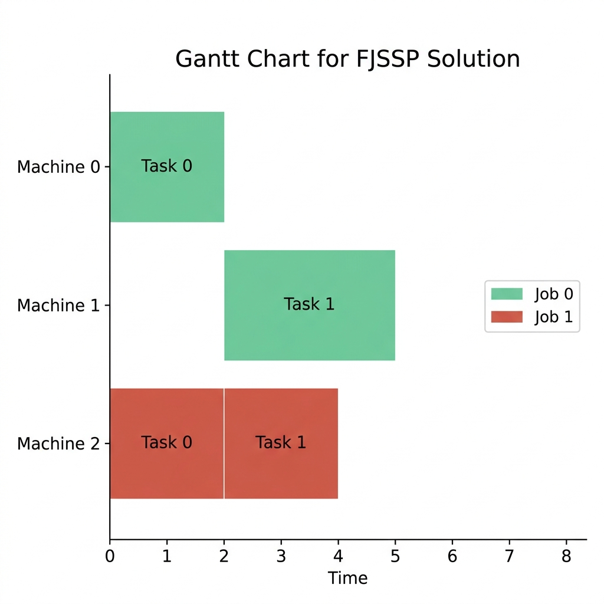
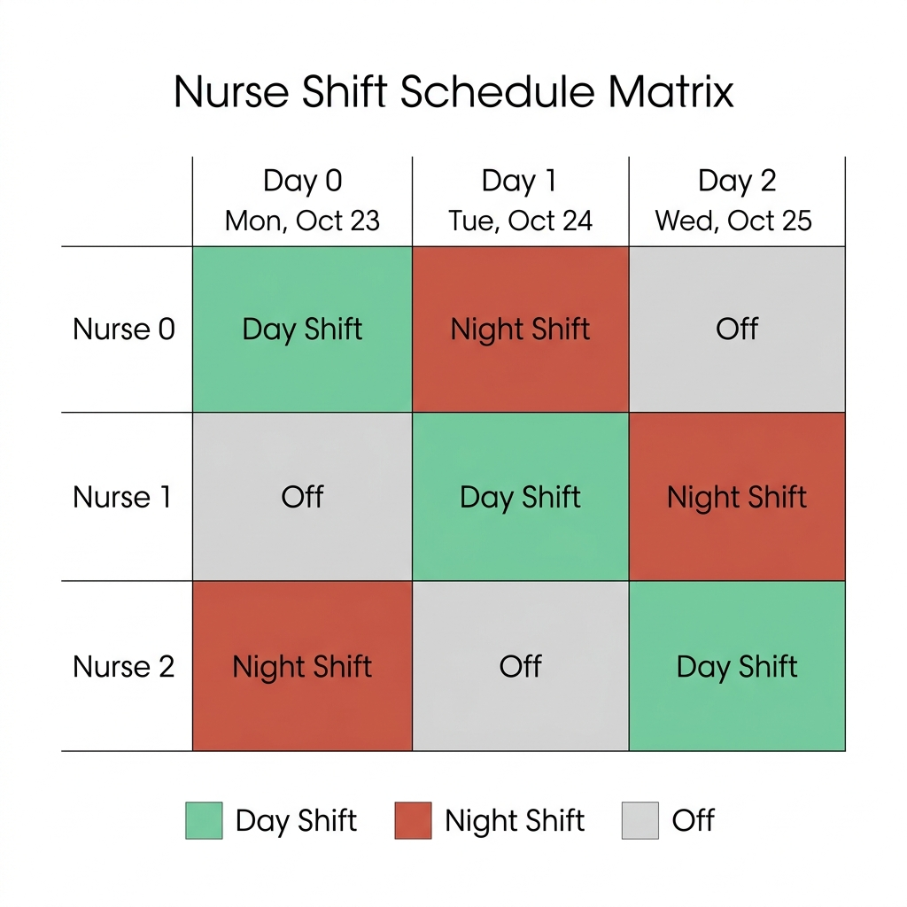

Combinatorial Optimization & Scheduling#
Unlike continuous optimization where variables can take any decimal value, Combinatorial Optimization deals with problems where the variables are discrete (e.g., integers, binary choices, or ordering permutations).
Many of these problems are NP-hard, meaning they cannot be solved to absolute perfection in polynomial time for large datasets. Instead, we use solvers and heuristics to find high-quality solutions.
1. Routing Problems#
1.1 The Traveling Salesperson Problem (TSP)#
In the Traveling Salesperson Problem (TSP), a salesperson must visit a set of cities exactly once and return to the starting city. The goal is to find the shortest possible route.
Given a distance matrix \(D\) where \(d_{ij}\) is the distance from city \(i\) to city \(j\), we want to find a permutation of cities \(\pi\) (where \(\pi(i)\) represents the \(i\)-th city visited in the sequence) that minimizes:
Here, the final term \(d_{\pi(n)\pi(1)}\) ensures the salesperson returns to the starting city. TSP is a classic routing problem used in logistics, package delivery, and microchip manufacturing.

Fig. 21 An optimal Traveling Salesperson Problem (TSP) tour route.#
1.2 Vehicle Routing Problem with Time Windows (VRPTW)#
The Vehicle Routing Problem (VRP) generalizes the TSP to a fleet of vehicles servicing multiple customers from a central depot. In VRPTW, each customer has a specific time window \([e_i, l_i]\) during which they must be serviced.
Core Constraints#
Capacity Constraint: The total demand of customers assigned to any vehicle must not exceed the vehicle’s capacity.
Time Window Constraint: For each customer \(i\), the service start time \(S_i\) must satisfy:
\[ e_i \le S_i \le l_i \]

Fig. 22 An optimal route plan for the Vehicle Routing Problem with Time Windows (VRPTW).#
Python Implementation: Solving VRPTW with Google OR-Tools Routing Library#
For routing problems, Google OR-Tools provides a specialized routing library built on top of its constraint solver.
from ortools.constraint_solver import routing_enums_pb2
from ortools.constraint_solver import pywrapcp
def create_data_model():
data = {}
# Time-distance matrix between depot (0) and 3 customer locations (1, 2, 3)
data['time_matrix'] = [
[0, 6, 9, 8],
[6, 0, 8, 3],
[9, 8, 0, 11],
[8, 3, 11, 0]
]
# Time windows for each location (start_time, end_time)
data['time_windows'] = [
(0, 5), # Depot
(7, 12), # Customer 1
(10, 15), # Customer 2
(5, 10) # Customer 3
]
data['num_vehicles'] = 2
data['depot'] = 0
return data
def main():
data = create_data_model()
manager = pywrapcp.RoutingIndexManager(
len(data['time_matrix']), data['num_vehicles'], data['depot']
)
routing = pywrapcp.RoutingModel(manager)
# 1. Define travel cost evaluator (Time-based cost)
def time_callback(from_index, to_index):
return data['time_matrix'][manager.IndexToNode(from_index)][manager.IndexToNode(to_index)]
transit_callback_index = routing.RegisterTransitCallback(time_callback)
routing.SetArcCostEvaluatorOfAllVehicles(transit_callback_index)
# 2. Add Time Dimension for Time Windows
time_dimension_name = 'Time'
routing.AddDimension(
transit_callback_index,
30, # allow waiting time
30, # maximum time per vehicle
False, # don't force start cumulative to zero
time_dimension_name
)
time_dimension = routing.GetDimensionOrDie(time_dimension_name)
# 3. Add Time Window constraints for each location
for node_idx, time_window in enumerate(data['time_windows']):
if node_idx == 0:
continue
index = manager.NodeToIndex(node_idx)
time_dimension.CumulVar(index).SetRange(time_window[0], time_window[1])
# 4. Set Search Parameters
search_parameters = pywrapcp.DefaultRoutingSearchParameters()
search_parameters.first_solution_strategy = (
routing_enums_pb2.FirstSolutionStrategy.PATH_CHEAPEST_ARC
)
# 5. Solve
solution = routing.SolveWithParameters(search_parameters)
if solution:
print("Successful VRPTW route solved.")
for vehicle_id in range(data['num_vehicles']):
index = routing.Start(vehicle_id)
plan_output = f"Route for vehicle {vehicle_id}:\n"
while not routing.IsEnd(index):
time_var = time_dimension.CumulVar(index)
plan_output += f" {manager.IndexToNode(index)} (Time: {solution.Min(time_var)}) -> "
index = solution.Value(routing.NextVar(index))
time_var = time_dimension.CumulVar(index)
plan_output += f" {manager.IndexToNode(index)} (Time: {solution.Min(time_var)})\n"
print(plan_output)
if __name__ == '__main__':
main()
2. Machine & Factory Scheduling#
2.1 Constraint Programming (CP)#
Constraint Programming (CP) is a software programming paradigm designed to solve hard combinatorial optimization problems by declaring constraints (logical or algebraic relationships) over variables.
Unlike traditional programming where we write algorithms to find solutions, in CP we define what the solution must satisfy, and the CP solver determines how to find it.
MIP vs. CP#
Mixed-Integer Programming (MIP): Focuses on optimizing a linear objective function over continuous and integer variables constrained by linear inequalities. It relies on mathematical models (linear relaxation, simplex method, branch-and-bound).
Constraint Programming (CP): Focuses on finding feasible solutions in highly discrete spaces. It allows non-linear, logical, and global constraints (e.g.,
AllDifferent,NoOverlap). It is especially powerful when the objective function is non-existent or secondary, and the constraints are highly complex.
How CP Solves Problems#
Traditionally, CP solvers operate using two interleaved steps:
Constraint Propagation: Every time a variable’s domain (set of possible values) is reduced, this change is propagated through constraints to prune the search space of other related variables.
Backtracking Search: The solver makes a decision (e.g., assigning a value to a variable) and propagates. If a contradiction occurs (domain becomes empty), the solver backtracks to a previous state and tries a different branch.
Modern solvers like Google OR-Tools CP-SAT go beyond traditional backtracking. They are SAT-based CP solvers that combine constraint programming with SAT technology. They leverage Lazy Clause Generation (LCG) to compile CP constraints into Boolean clauses lazily during search, and CDCL (Conflict-Driven Clause Learning) to learn from contradictions and prevent the solver from making the same bad decisions again, providing orders-of-magnitude faster performance on combinatorial problems.
CP in Scheduling#
CP is the state-of-the-art methodology for scheduling because of its native support for Interval Variables (which represent tasks with start, duration, and end parameters) and No-Overlap Constraints:
Instead of formulating these disjunctive constraints using big-M formulations (as in MIP), CP solvers use specialized propagation algorithms (such as edge-finding) to prune the search space extremely efficiently.
2.2 The Job Shop Scheduling Problem (JSSP)#
The Job Shop Scheduling Problem (JSSP) is one of the most famous scheduling problems in industrial engineering and operations research.
Problem Definition#
We have a set of Jobs (e.g., manufacturing specific products).
Each Job consists of a sequence of Tasks that must be executed in a strict order.
Each Task must be processed on a specific Machine for a given duration.
Constraints:
A machine can only process one task at a time (no overlap).
Tasks of a single job must be processed in sequence.
Objective: Minimize the makespan (the total time to complete all jobs).
Mathematical MILP Formulation (Manne-style)#
To formulate the JSSP as a Mixed-Integer Linear Program, we define:
\(s_{ij} \ge 0\): The start time of task \(j\) belonging to job \(i\).
\(p_{ij} > 0\): The processing duration of task \(j\) of job \(i\).
\(C_{max}\): The makespan (maximum completion time of all jobs).
\(x_{ij, hk} \in \{0, 1\}\): A binary decision variable for ordering tasks on the same machine:
\[\begin{split} x_{ij, hk} = \begin{cases} 1 & \text{if task } (i,j) \text{ is processed before task } (h,k) \text{ on the same machine} \\ 0 & \text{otherwise} \end{cases} \end{split}\]
The JSSP model is defined as:
Here, \(M\) is a sufficiently large positive constant (Big-M) used to disable one of the two overlap constraints depending on the value of \(x_{ij, hk}\).
[!NOTE] In MIP models, the Big-M parameter is notorious for weakening the linear relaxation bounds, leading to slower solver convergence. In contrast, CP solvers handle these disjunctions naturally via logical
NoOverlapconstraints on interval variables, avoiding Big-M entirely.

Fig. 23 A typical Gantt chart solution for the Job Shop Scheduling Problem showing non-overlapping tasks.#
2.3 Python Implementation: Solving JSSP with Google OR-Tools#
We can use Google’s OR-Tools (Constraint Programming CP-SAT solver) to solve a small JSSP instance.
Instance Definition#
Job 0:
Task 1: Machine 0, duration 3
Task 2: Machine 1, duration 2
Task 3: Machine 2, duration 2
Job 1:
Task 1: Machine 0, duration 2
Task 2: Machine 2, duration 1
Task 3: Machine 1, duration 4
Job 2:
Task 1: Machine 1, duration 4
Task 2: Machine 2, duration 3
Task 3: Machine 0, duration 3
from ortools.sat.python import cp_model
# 1. Prepare Data
jobs_data = [
[(0, 3), (1, 2), (2, 2)], # Job 0
[(0, 2), (2, 1), (1, 4)], # Job 1
[(1, 4), (2, 3), (0, 3)] # Job 2
]
num_machines = 3
all_machines = range(num_machines)
# Calculate sum of all durations to set as our maximum timeline horizon
horizon = sum(task[1] for job in jobs_data for task in job)
model = cp_model.CpModel()
# 2. Define Variables
all_tasks = {} # (job_id, task_id): (start_var, end_var)
machine_to_intervals = {m: [] for m in all_machines}
for job_id, job in enumerate(jobs_data):
for task_id, (machine, duration) in enumerate(job):
suffix = f"_{job_id}_{task_id}"
# Define start, end, and interval variables for the task
start_var = model.NewIntVar(0, horizon, f"start{suffix}")
end_var = model.NewIntVar(0, horizon, f"end{suffix}")
interval_var = model.NewIntervalVar(
start_var, duration, end_var, f"interval{suffix}"
)
all_tasks[job_id, task_id] = (start_var, end_var)
machine_to_intervals[machine].append(interval_var)
# 3. Add overlap constraints (no two tasks on the same machine can overlap)
for machine in all_machines:
model.AddNoOverlap(machine_to_intervals[machine])
# 4. Add precedence constraints (tasks of a job must run sequentially)
for job_id, job in enumerate(jobs_data):
for task_id in range(len(job) - 1):
model.Add(all_tasks[job_id, task_id + 1][0] >= all_tasks[job_id, task_id][1])
# 5. Define makespan objective (minimize the maximum end time)
makespan = model.NewIntVar(0, horizon, "makespan")
model.AddMaxEquality(
makespan,
[all_tasks[job_id, len(job) - 1][1] for job_id, job in enumerate(jobs_data)]
)
model.Minimize(makespan)
# 6. Solve
solver = cp_model.CpSolver()
status = solver.Solve(model)
if status == cp_model.OPTIMAL or status == cp_model.FEASIBLE:
print(f"Optimal Makespan: {solver.ObjectiveValue()}")
for job_id, job in enumerate(jobs_data):
for task_id, task in enumerate(job):
start = solver.Value(all_tasks[job_id, task_id][0])
end = solver.Value(all_tasks[job_id, task_id][1])
print(f"Job {job_id}, Task {task_id} starts at {start}, ends at {end}")
2.4 Flexible Job Shop Scheduling Problem (FJSSP)#
In the standard JSSP, each task is strictly bound to a single predefined machine. The Flexible Job Shop Scheduling Problem (FJSSP) introduces a significant generalization: each task can be processed on any machine from a set of alternative compatible machines, potentially with different processing times.
Therefore, FJSSP requires solving two sub-problems simultaneously:
Routing Decision: Choose which machine processes each task.
Scheduling Decision: Determine the sequence of tasks on each machine to minimize the total makespan.
Mathematical MILP Formulation (Machine Selection and Conditional Overlap)#
In FJSSP, since tasks are not pre-assigned to a single machine, we introduce machine routing variables:
\(y_{ij, m} \in \{0, 1\}\): A binary decision variable equal to \(1\) if task \(j\) of job \(i\) is assigned to machine \(m\), and \(0\) otherwise.
\(p_{ij, m}\): The processing duration of task \(j\) of job \(i\) if processed on machine \(m\).
The mathematical model extends the JSSP formulation with the following routing and execution constraints:
Assign Exactly One Machine:
\[ \sum_{m \in \mathcal{M}_{ij}} y_{ij, m} = 1 \quad \forall i, j \]Determine Actual Duration:
\[ p_{ij} = \sum_{m \in \mathcal{M}_{ij}} y_{ij, m} \cdot p_{ij, m} \quad \forall i, j \]Conditional Non-Overlapping (MIP conditional Big-M): If two tasks \((i,j)\) and \((h,k)\) are assigned to the same machine \(m\) (\(y_{ij,m} = 1\) and \(y_{hk,m} = 1\)), they must not overlap:
\[ s_{ij} + p_{ij, m} \le s_{hk} + M(3 - x_{ij, hk, m} - y_{ij, m} - y_{hk, m}) \]
{kind=link}

Fig. 24 A typical Gantt chart solution for the Flexible Job Shop Scheduling Problem.#
Python Implementation: Solving FJSSP with Google OR-Tools#
We model the routing choice using optional intervals and enforce that exactly one alternative machine is chosen per task using model.AddExactlyOne().
from ortools.sat.python import cp_model
# 1. Instance Definition
# Format: each job has tasks, and each task lists alternative (machine_id, duration) pairs.
jobs_data = [
[ # Job 0
[(0, 2), (1, 3)], # Task 0 can run on M0 (dur 2) or M1 (dur 3)
[(1, 3), (2, 4)] # Task 1 can run on M1 (dur 3) or M2 (dur 4)
],
[ # Job 1
[(0, 1), (2, 2)], # Task 0 can run on M0 (dur 1) or M2 (dur 2)
[(0, 3), (1, 2), (2, 2)] # Task 1 can run on M0, M1, or M2
]
]
num_machines = 3
all_machines = range(num_machines)
# Calculate timeline horizon (upper bound)
horizon = sum(max(alt[1] for alt in task) for job in jobs_data for task in job)
model = cp_model.CpModel()
# Variables representation
all_tasks = {} # (job_id, task_id): (start_var, end_var)
machine_to_intervals = {m: [] for m in all_machines}
for job_id, job in enumerate(jobs_data):
for task_id, task in enumerate(job):
# Master start/end variables for the task
start_var = model.NewIntVar(0, horizon, f"start_{job_id}_{task_id}")
end_var = model.NewIntVar(0, horizon, f"end_{job_id}_{task_id}")
all_tasks[job_id, task_id] = (start_var, end_var)
presence_literals = []
for alt_id, (machine, duration) in enumerate(task):
suffix = f"_{job_id}_{task_id}_{machine}"
l_presence = model.NewBoolVar(f"presence{suffix}")
presence_literals.append(l_presence)
# Optional interval directly using master start_var and end_var
l_interval = model.NewOptionalIntervalVar(
start_var, duration, end_var, l_presence, f"interval{suffix}"
)
machine_to_intervals[machine].append(l_interval)
# Enforce that exactly one machine is chosen for this task
model.AddExactlyOne(presence_literals)
# 2. Add overlap constraints (no overlap on any machine)
for machine in all_machines:
model.AddNoOverlap(machine_to_intervals[machine])
# 3. Add precedence constraints (sequential tasks within each job)
for job_id, job in enumerate(jobs_data):
for task_id in range(len(job) - 1):
model.Add(all_tasks[job_id, task_id + 1][0] >= all_tasks[job_id, task_id][1])
# 4. Define makespan objective
makespan = model.NewIntVar(0, horizon, "makespan")
model.AddMaxEquality(
makespan,
[all_tasks[job_id, len(job) - 1][1] for job_id in range(len(jobs_data))]
)
model.Minimize(makespan)
# Solve
solver = cp_model.CpSolver()
status = solver.Solve(model)
if status == cp_model.OPTIMAL or status == cp_model.FEASIBLE:
print(f"Optimal Makespan: {solver.ObjectiveValue()}")
for job_id, job in enumerate(jobs_data):
for task_id, task in enumerate(job):
start = solver.Value(all_tasks[job_id, task_id][0])
end = solver.Value(all_tasks[job_id, task_id][1])
print(f"Job {job_id}, Task {task_id} starts at {start}, ends at {end}")
2.5 FJSSP with Sequence-Dependent Setup Times (SDST)#
In real manufacturing, when a machine switches from processing job \(A\) to job \(B\), it often requires a setup time (e.g., cleaning, re-tooling, or adjusting temperatures). This setup duration depends on the sequence: switching from white paint to black paint might take 5 minutes, but cleaning the nozzles to switch from black paint to white paint could take 40 minutes.
To implement SDST in OR-Tools CP-SAT, we use ordering boolean variables to establish the sequence of tasks on each machine and enforce the setup transition delays:

Fig. 25 Visualizing sequence-dependent setup time between two consecutive job runs.#
Python Implementation: Solving FJSSP with SDST#
Below is a complete, working Python example of solving an FJSSP with Sequence-Dependent Setup Times (SDST) using Google OR-Tools:
from ortools.sat.python import cp_model
def solve_fjssp_sdst():
model = cp_model.CpModel()
# Setup times matrix: setup_times[machine][from_job][to_job]
# Machine 0: Job 0 -> Job 1 takes 2 units; Job 1 -> Job 0 takes 1 unit.
# Machine 1: Job 0 -> Job 1 takes 3 units; Job 1 -> Job 0 takes 2 units.
setup_times = {
0: [[0, 2], [1, 0]],
1: [[0, 3], [2, 0]]
}
# Format: each job has tasks, and each task lists alternative (machine, duration) pairs.
jobs_data = [
[[(0, 2), (1, 3)], [(1, 2)]], # Job 0
[[(0, 2), (1, 2)], [(0, 3)]] # Job 1
]
num_machines = 2
all_machines = range(num_machines)
horizon = 30
# 1. Variables representation
all_tasks = {} # (job_id, task_id): (start_var, end_var)
machine_to_intervals = {m: [] for m in all_machines}
machine_to_metadata = {m: [] for m in all_machines}
for job_id, job in enumerate(jobs_data):
for task_id, task in enumerate(job):
# Master start/end variables for the task
start_var = model.NewIntVar(0, horizon, f"start_{job_id}_{task_id}")
end_var = model.NewIntVar(0, horizon, f"end_{job_id}_{task_id}")
all_tasks[job_id, task_id] = (start_var, end_var)
presence_literals = []
for machine, duration in task:
suffix = f"_{job_id}_{task_id}_{machine}"
l_presence = model.NewBoolVar(f"presence{suffix}")
presence_literals.append(l_presence)
# Create optional interval
l_interval = model.NewOptionalIntervalVar(
start_var, duration, end_var, l_presence, f"interval{suffix}"
)
machine_to_intervals[machine].append(l_interval)
machine_to_metadata[machine].append({
'job_id': job_id,
'task_id': task_id,
'presence': l_presence,
'start': start_var,
'end': end_var
})
model.AddExactlyOne(presence_literals)
# 2. Precedence Constraints (sequential tasks within each job)
for job_id, job in enumerate(jobs_data):
for task_id in range(len(job) - 1):
model.Add(all_tasks[job_id, task_id + 1][0] >= all_tasks[job_id, task_id][1])
# 3. No-Overlap & Sequence-Dependent Setup Constraints
for machine in all_machines:
# Prevent overlapping intervals on each machine
model.AddNoOverlap(machine_to_intervals[machine])
metadata = machine_to_metadata[machine]
for i in range(len(metadata)):
for j in range(i + 1, len(metadata)):
t1 = metadata[i]
t2 = metadata[j]
# Active helper boolean when both tasks are assigned to this machine
both_present = model.NewBoolVar(f"both_present_{machine}_{t1['job_id']}_{t2['job_id']}")
model.AddBoolAnd([t1['presence'], t2['presence']]).OnlyEnforceIf(both_present)
# Define boolean variable representing order: True if t1 is executed before t2
t1_before_t2 = model.NewBoolVar(f"before_{machine}_{t1['job_id']}_{t2['job_id']}")
# If t1 is before t2, enforce end(t1) + setup_time(t1, t2) <= start(t2)
setup_t1_t2 = setup_times[machine][t1['job_id']][t2['job_id']]
model.Add(t2['start'] >= t1['end'] + setup_t1_t2).OnlyEnforceIf([both_present, t1_before_t2])
# If t2 is before t1, enforce end(t2) + setup_time(t2, t1) <= start(t1)
setup_t2_t1 = setup_times[machine][t2['job_id']][t1['job_id']]
model.Add(t1['start'] >= t2['end'] + setup_t2_t1).OnlyEnforceIf([both_present, t1_before_t2.Not()])
# 4. Makespan Objective
makespan = model.NewIntVar(0, horizon, "makespan")
model.AddMaxEquality(
makespan,
[all_tasks[job_id, len(jobs_data[job_id]) - 1][1] for job_id in range(len(jobs_data))]
)
model.Minimize(makespan)
# Solve
solver = cp_model.CpSolver()
status = solver.Solve(model)
if status == cp_model.OPTIMAL or status == cp_model.FEASIBLE:
print(f"Optimal Makespan with SDST: {solver.ObjectiveValue()}")
for job_id, job in enumerate(jobs_data):
for task_id, task in enumerate(job):
start = solver.Value(all_tasks[job_id, task_id][0])
end = solver.Value(all_tasks[job_id, task_id][1])
print(f"Job {job_id}, Task {task_id} starts at {start}, ends at {end}")
if __name__ == '__main__':
solve_fjssp_sdst()
3. Resource & Project Scheduling#
3.1 Resource-Constrained Project Scheduling Problem (RCPSP)#
Unlike factory scheduling where a machine can process at most one task (unary capacity), project scheduling deals with Cumulative Resources (e.g., a pool of 10 workers, 3 trucks, or electrical power). Multiple tasks can execute simultaneously as long as their combined resource consumption does not exceed the total capacity limit.
Mathematical Formulation#
Let \(K\) be the set of cumulative resources, and let \(R_k\) be the maximum capacity of resource \(k \in K\). Each task \(i\) has a processing duration \(p_i\), a start time \(s_i\), and requires \(r_{ik}\) units of resource \(k\) throughout its execution.
At any time step \(t\) in the project horizon, the total consumption of any resource \(k\) by all active tasks must not exceed its capacity:
where \(A(t) = \{ i \mid s_i \le t < s_i + p_i \}\) is the set of active tasks at time \(t\).

Fig. 26 Stacked cumulative resource consumption graph showing total demand staying below capacity.#
Python Implementation: Solving RCPSP with Google OR-Tools#
CP-SAT provides a powerful global constraint model.AddCumulative() to enforce this capacity constraint.
from ortools.sat.python import cp_model
model = cp_model.CpModel()
# 1. Setup Parameters
resource_capacity = 4 # Total available workers
durations = [3, 2, 4] # Durations of Tasks 0, 1, 2
demands = [2, 3, 1] # Workers needed per task
horizon = sum(durations)
# 2. Create Interval Variables
intervals = []
starts = []
ends = []
for i, (duration, demand) in enumerate(zip(durations, demands)):
start = model.NewIntVar(0, horizon, f"start_{i}")
end = model.NewIntVar(0, horizon, f"end_{i}")
interval = model.NewIntervalVar(start, duration, end, f"interval_{i}")
starts.append(start)
ends.append(end)
intervals.append(interval)
# 3. Add Cumulative Resource Constraint
model.AddCumulative(intervals, demands, resource_capacity)
# 4. Minimize project completion time (makespan)
makespan = model.NewIntVar(0, horizon, "makespan")
model.AddMaxEquality(makespan, ends)
model.Minimize(makespan)
# Solve
solver = cp_model.CpSolver()
status = solver.Solve(model)
if status == cp_model.OPTIMAL or status == cp_model.FEASIBLE:
print(f"Optimal Project Makespan: {solver.ObjectiveValue()}")
for i in range(len(durations)):
print(f"Task {i} starts at {solver.Value(starts[i])}, ends at {solver.Value(ends[i])} (Requires {demands[i]} workers)")
4. Workforce Scheduling#
4.1 Shift Scheduling & Nurse Rostering#
Workforce scheduling assigns staff members to shifts (e.g., Morning, Afternoon, Night) over a schedule horizon, subject to complex labor regulations (hard constraints) and employee preferences (soft constraints).
Constraint Examples#
No Double Shifts: An employee cannot work more than one shift per day.
Rest Periods: Employees cannot work a Night shift followed immediately by a Morning shift the next day.
Under/Overstaffing Limits: Each shift must have a minimum number of employees assigned.
{kind=link}

Fig. 27 A typical shift roster matrix showing daily nurse shift assignments.#
Python Implementation: Simple Nurse Rostering using CP-SAT#
from ortools.sat.python import cp_model
num_nurses = 3
num_days = 3
num_shifts = 2 # 0: Day, 1: Night
all_nurses = range(num_nurses)
all_days = range(num_days)
all_shifts = range(num_shifts)
model = cp_model.CpModel()
# 1. Variables: shifts[(n, d, s)] = 1 if nurse n works shift s on day d
shifts = {}
for n in all_nurses:
for d in all_days:
for s in all_shifts:
shifts[n, d, s] = model.NewBoolVar(f"shift_n{n}_d{d}_s{s}")
# 2. Constraint: Each shift on each day has exactly 1 nurse assigned
for d in all_days:
for s in all_shifts:
model.AddExactlyOne(shifts[n, d, s] for n in all_nurses)
# 3. Constraint: Each nurse works at most 1 shift per day
for n in all_nurses:
for d in all_days:
model.AddAtMostOne(shifts[n, d, s] for s in all_shifts)
# 4. Constraint: A nurse cannot work a Night shift (s=1) followed by a Day shift (s=0) the next day
for n in all_nurses:
for d in range(num_days - 1):
model.Add(shifts[n, d, 1] + shifts[n, d + 1, 0] <= 1)
# Solve
solver = cp_model.CpSolver()
status = solver.Solve(model)
if status == cp_model.OPTIMAL or status == cp_model.FEASIBLE:
print("Successful Nurse Rostering Schedule:")
for d in all_days:
print(f"Day {d}:")
for s in all_shifts:
shift_name = "Day" if s == 0 else "Night"
for n in all_nurses:
if solver.Value(shifts[n, d, s]) == 1:
print(f" {shift_name} shift assigned to Nurse {n}")
5. Comparison: Mathematical Formulation vs. OR-Tools CP-SAT Code#
The table below maps the standard mathematical definitions to their corresponding implementations in the Google OR-Tools CP-SAT API:
Mathematical Concept |
Math Formulation (MIP/CP) |
OR-Tools CP-SAT Syntax |
|---|---|---|
Task / Interval Variable |
\(\text{Task}_i = [s_i, s_i + d_i]\) |
|
No-Overlap Constraint |
\(s_i + d_i \le s_j \lor s_j + d_j \le s_i\) |
|
Precedence / Sequential Ordering |
\(s_j \ge s_i + d_i\) |
|
Alternative Machine Routing |
\(\sum_{m} y_{i,m} = 1\) |
|
Cumulative Resource Bounds |
\(\sum_{i \in A(t)} r_{ik} \le R_k\) |
|
Exercises#
Exercise 1
Consider a JSSP with 2 machines (\(M_0, M_1\)) and 1 job. The job has 2 tasks:
Task 0: requires \(M_0\), duration = 4.
Task 1: requires \(M_1\), duration = 3. What is the minimum makespan if Task 1 must follow Task 0?
Solution — Exercise 1
Since there is only one job, and Task 1 must wait for Task 0 to finish:
Task 0 starts at \(t=0\), ends at \(t=4\).
Task 1 starts at \(t=4\) (earliest possible), ends at \(t=4+3=7\). The minimum makespan is 7.